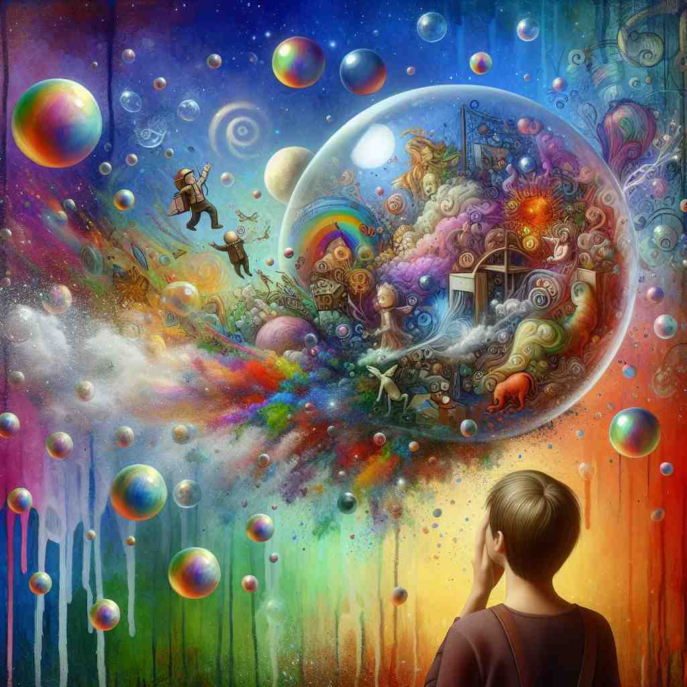
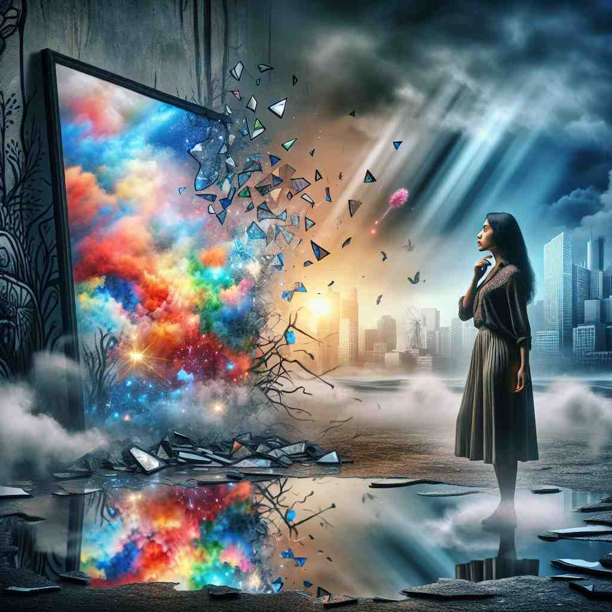
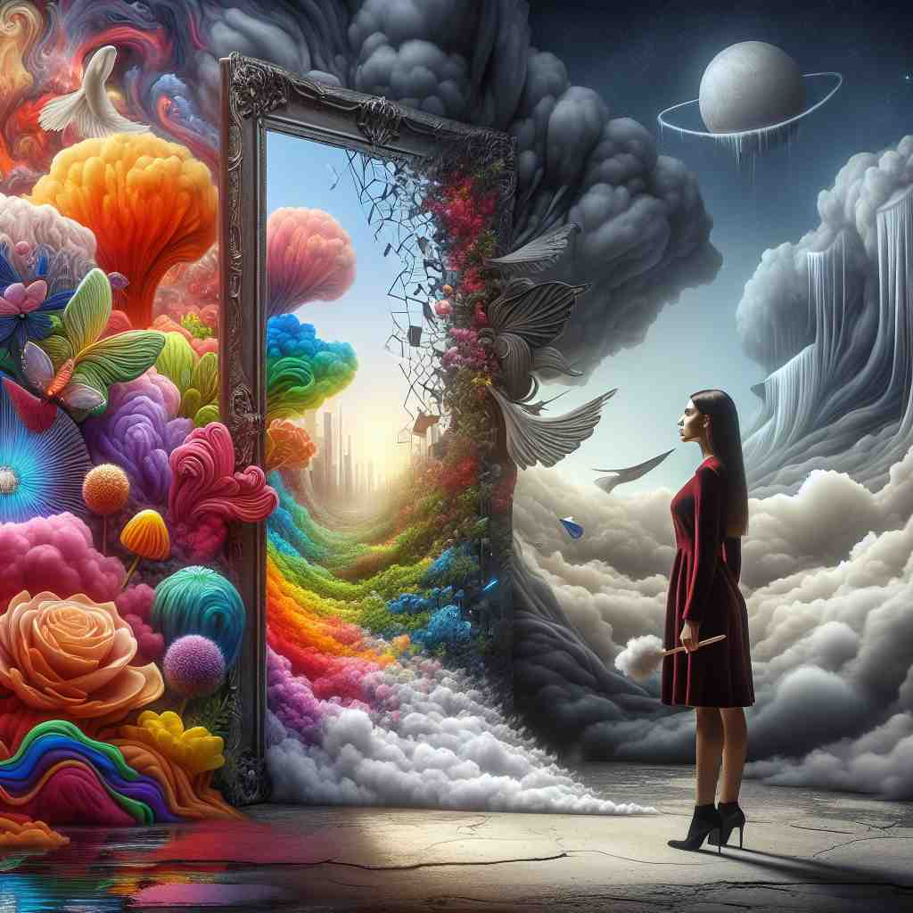

🗝️ v. to free someone from false beliefs or expectations
🖼️ 想象一个年轻的学生，满怀梦想地进入名校。他期待一切都完美无缺。然而，通过课堂的严苛考核和现实的挑战，这名学生逐渐认识到现实与幻想之间的差距。老师耐心地引导他说：'学校教育是自由思想的平台，不是实现所有愿望的魔法。'这体现出'disillusion'作为解除虚假信念的过程。
🔍 想象'disillusion'是从一个泡泡中走出来的过程。这个泡泡代表着错误的信念或期望。当泡泡破裂时，人们失去了幻想，面对现实。无论是动词还是名词形式，都围绕着这个'破除幻想'的核心概念。记住这个画面可以帮助你理解和记忆这个词的各种用法。

💬 The colorful scene might disillusion a child about the magic of reality.

💬 She felt disillusion with reality after seeing the stark changes in her surroundings.

💬 The woman seems to disillusion with reality as she gazes into the colorful scene.

💬 The man was disillusioned when he realized the castle in his dreams was just an illusion.
💡 记忆 "disillusion" 时，可以将其拆分为 "dis" + "illusion"。联想为打破（dis）幻觉（illusion），即从幻想中清醒过来。